a. Vi sai bánh răng côn đối xứng
Bộ vi sai bánh răng côn đối xứng được dùng phổ biến trên ô tô làm vi sai giữa các bánh xe trên một cầu để đảm bảo cho chúng quay với tốc độ khác nhau tùy theo lực cản của mặt đường tại vị trí các bánh xe. Sơ đồ cấu tạo được biểu diễn trên Hình 7.11.
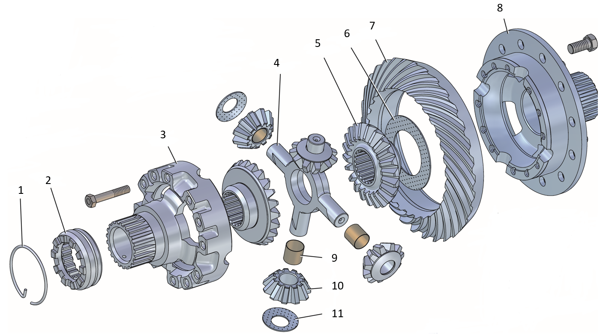
Hình 7.11. Cấu tạo bộ vi sai bánh răng côn đối xứng
1- Vòng hãm; 2- Khớp khóa vi sai; 3,8- Vỏ vi sai; 4- Trục bánh răng vi sai; 5- Bánh răng mặt trời (bán trục); 6,11- Đệm tựa; 7- Bánh răng bị động truyền lực chính; 9- Ống lót ; 10- Bánh răng hành tinh (vi sai).
Cấu tạo của bộ vi sai Hình 7.11 bao gồm các chi tiết như sau: vỏ vi sai gồm hai nửa 3 và 8, chúng được lắp ghép cố định với nhau bằng các bu lông. Ở vỏ 8 có lắp cố định bánh răng bánh răng bị động của truyền lực chính bằng bu lông hoặc các vít cấy. Tại mặt phẳng phân chia vỏ vi sai được đặt trục bánh răng vi sai mà ở mỗi đầu của trục này đều có lắp bánh răng vi sai 10.
Thông thường mỗi bộ vi sai có bốn bánh răng vi sai. Ở một số ô tô tải trọng nhỏ chỉ dùng hai bánh răng vi sai. Các bánh răng vi sai 10 đồng thời ăn khớp với hai bánh răng bán trục 5. Mặt lưng của các bánh răng vi sai 10 có dạng chỏm cầu và khi lắp các chỏm cầu này vào vỏ vi sai. Nhờ vậy mà các bánh răng vi sai được định tâm tốt và đảm bảo được độ chính xác ăn khớp với các bánh răng bán trục. Để giảm ma sát giữa bề mặt lưng của các bánh răng vi sai 10 và bánh răng bán trục 5 với vỏ vi sai và giảm sự mài mòn các bề mặt tỳ đó người ta đặt các đệm tựa 6 và 11. Thông thường các đệm tựa này được chế tạo bằng đồng thau và ở bề mặt tiếp xúc của nó có các lỗ nhỏ để chứa dầu bôi trơn. Tại moay ơ của các bánh răng bán trục 5 có gia công lỗ then hoa để lắp ghép với then hoa của các đầu bán trục.
Việc bôi trơn vi sai được đảm bảo bằng các biện pháp kết cấu như: ở các ngõng trục chữ thập có các mặt vát để chứa dầu bôi trơn cho bánh răng vi sai; ở chân răng của bánh răng vi sai và bánh răng bán trục có gia công các lỗ dầu bôi trơn mặt tỳ lưng bánh răng, các lỗ nhỏ trên bề mặt đệm.
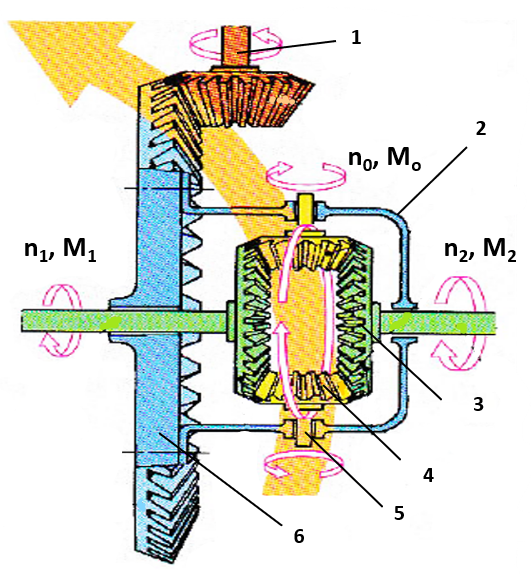
Hình 7.12. Nguyên lý hoạt động vi sai bánh răng côn đối xứng
1- Trục chủ động; 2- Vỏ vi sai; 3- Bánh răng bán trục; 4- Bánh răng vi sai; 5- Trục bánh răng vi sai; 6- Bánh răng bị động.
Nguyên lý hoạt động của bộ vi sai bánh răng côn đối xứng như sau:
Khi vỏ vi sai 2 quay cùng với bánh răng bị động 6 của truyền lực chính với số vòng quay là n0 như Hình 7.12, qua các bánh răng hành tinh 4 và các bánh răng bán trục 3 làm cho các bán trục bên trái và bên phải quay số vòng quay theo thứ tự tương ứng là n1 và n2. Sự truyền mô men xoắn M0 từ vỏ vi sai 2 đến trục bánh răng vi sai 5, đến các bánh răng vi sai 4 và các bánh răng bán trục 3 rồi mới tới các bán trục bên trái là M1 và bên phải là M2. Xét các trường hợp xe hoạt động:
+ Khi xe chuyển động thẳng hoặc lực cản mặt đường tác dụng lên hai bánh xe là như nhau: Các bánh răng bán trục có cùng số vòng quay n1 = n2 nên các bánh răng vi sai 4 không chuyển động quay quanh trục của nó (lúc đó các bánh răng này chỉ tham gia một chuyển động quay cùng với vỏ vi sai). Các bánh răng của bộ vi sai đóng vai trò như những chêm đảm bảo cho các bộ vi sai quay thành một khối.
Trường hợp này ta có:
Động học của vi sai:
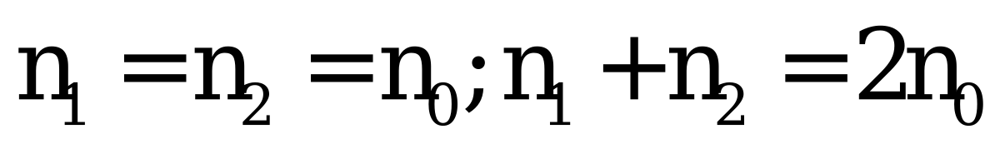
(7.1)Động lực học của vi sai:
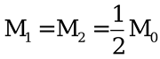
(7.2)Trong đó:
n1 – Số vòng quay của bán trục bên trái;
n2 – Số vòng quay của bán trục bên phải;
M1 – Mô men xoắn phân ra bán trục bên trái;
M2 – Mô men xoắn phân ra bán trục bên phải;
n0, M0 – Số vòng quay và mô men xoắn trên vỏ vi sai.
+ Khi xe quay vòng hoặc khi sức cản mặt đường tác dụng lên hai bánh xe là khác nhau: Hai bánh răng bán trục sẽ quay với số vòng quay khác nhau n1 ≠ n2. Lúc đó các bánh răng vi sai vừa chuyển động quay theo vỏ vi sai và chúng còn có chuyển động quay tương đối xung quanh trục. Do các bánh răng vi sai đồng thời ăn khớp với hai bánh răng bán trục nên chúng sẽ làm tăng số vòng quay của bánh răng bán trục này lên bao nhiêu thì cũng đồng thời làm giảm số vòng quay của bánh răng bán trục kia đi bấy nhiêu để đảm bảo được phương trình động học của bộ vi sai (7.1). Do vậy các bánh xe sẽ không xảy ra sự trượt. Giả sử bánh xe bên trái quay nhanh và bánh xe bên phải quay chậm ( n1 > n2) khi đó sẽ xuất hiện mô men ma sát Mr do chuyển động quay tương đối của các bánh răng vi sai quanh trục của nó và chuyển động tương đối giữa các bánh răng bán trục. Ta gọi Mr là mô men ma sát trong của bộ vi sai. Khi đó mô men phân chia cho hai bánh trục sẽ là:
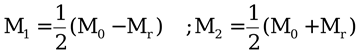
Có nghĩa là mô men trên bán trục quay chậm hơn sẽ có giá trị lớn hơn mô men trên bán trục quay nhanh hơn.
+ Giả sử bánh xe chủ động bên phải nằm ở chỗ đường lầy còn bánh xe bên trái nằm ở chỗ đường tốt. Do vi sai này có mô men ma sát trong Mr nhỏ nên mô men xoắn truyền đến bánh xe bên trái được tăng lên nhưng cũng không đủ để khắc phục lực cản nên xe bị sa lầy, (M2 nhỏ do bánh xe bên phải có khả năng bám kém). Kết quả là bánh xe bên phải nằm ở chỗ lầy sẽ quay với tốc độ góc bằng tốc độ góc của vỏ vi sai còn bánh xe bên trái đứng yên và xe không thể chuyển động được, nghĩa là:
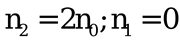
(7.3)
Ngược lại nếu bánh xe bên phải nằm ở chỗ đường tốt và bánh xe bên trái nằm ở chỗ đường lầy thì hiện tượng xảy ra cũng tương tự, nghĩa là:
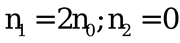
(7.4)
+ Khi tốc độ quay của vỏ vi sai đột ngột bằng không (n0 = 0). Trường hợp này xảy ra trong thực tế khi tiến hành phanh trục truyền bằng phanh tay hoặc kê kích bánh xe sau đó lấy tay quay một bánh xe trên cùng một cầu chủ động. Khi đó tốc độ góc của vỏ vi sai bằng 0, ta có:
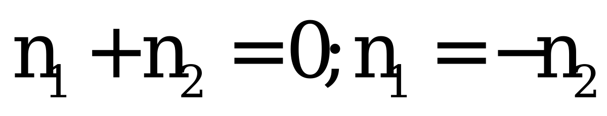
(7.5)
Điều này có nghĩa là chiều quay của bánh xe bên phải và bên trái là ngược nhau làm cho xe đang chuyển động có xu hướng quay ngang và mất khả năng ổn định hướng chuyển động. Vì vậy đối với những xe có bố trí phanh tay ở trục truyền lực thì trong quá trình xe đang chuyển động không được sử dụng phanh tay để phanh xe.
Việc phân chia đều mô men xoắn cho các bánh xe chủ động thích hợp với những trường hợp xe chạy trên đường tốt hoặc điều kiện chuyển động của hai bánh xe là như nhau. Nó giảm tải trọng động cho dẫn động các bánh xe, giảm mòn lốp xe và giảm suất tiêu hao nhiêu liệu, dễ điều khiển xe. Tuy nhiên do ma sát trong bộ vi sai nhỏ nên làm giảm khả năng thông qua của xe khi một trong hai bánh xe nằm vào chỗ đường lầy (đường có hệ số bám nhỏ). Muốn khắc phục nhược điểm này cần phải có cơ cấu khoá vi sai khi cần thiết. Khi vi sai được khoá cứng hai bán trục được nối thành một trục cứng, khi đó sẽ cùng quay tốc độ như nhau và tận dụng trọng lượng bám của xe để vượt qua đường có hệ số bám thấp. Vi sai thường được khoá bằng cách nối một trong hai bán trục với vỏ vi sai nhờ khớp răng hoặc nhờ cơ cấu khoá kiểu cam.
b. Vi sai tăng ma sát
Trên một số ô tô có tính năng cơ động cao, cần mô men ma sát trong bộ vi sai lớn để cho phép tăng khả năng chuyển động của ô tô trên đường trơn lầy thì người ta sử dụng bộ vi sai cam hướng kính. Sơ đồ nguyên lý như trên Hình 7.13
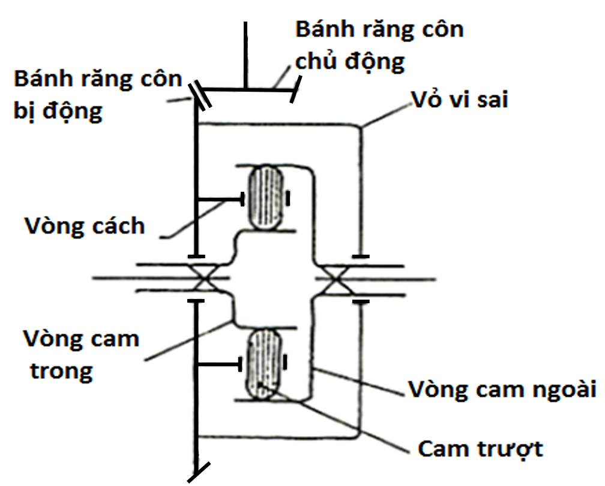
Hình 7.13. Sơ đồ nguyên lý bộ vi sai cam hướng kính
Đặc điểm cấu tạo bộ vi sai cam hướng kính hai dãy vấu cam và các con trượt như Hình 7.14. Vi sai được tạo bởi vòng cách 1, vành cam ngoài 3, vành cam trong 4, các con trượt 2 và vỏ vi sai. Vòng cách 1 là phần chủ động của bộ vi sai này. Nó được chế tạo liền mới moay ơ của bánh răng bị động truyền lực chính và là phần bên trái của vỏ vi sai. Ở thân vòng cách có gia công hai dãy lỗ để lắp các con trượt 2. Mỗi dãy lỗ gồm 12 lỗ hướng kính và các lỗ trên hai dãy được đặt so le nhau.
Vành cam trong 4 gồm hai dãy cam gồm 6 vấu cam như nhau và hai dãy cam này cũng được bố trí so le nhau nửa bước. Ở moay ơ của vành cam trong 4 có gia công lỗ then hoa để lắp ghép với bán trục phía bên trái. Vành cam ngoài 3 chỉ có một dãy cam gồm 6 cam lõm có biên dạng và kích thước như nhau. Moay ơ của vành cam ngoài 3 có gia công lỗ then hoa để lắp ghép với bán trục phía bên phải và lỗ đưa dầu vào bôi trơn các bề mặt của vi sai.
Vi sai cam có 24 con trượt được lắp đặt vào hai dãy lỗ của vòng cách 1. Ở mặt trong của vòng cách 1 người ta có đặt vòng chặn để chống xoay các con trượt và giữ chúng ở trong lỗ vòng cách khi lắp ráp. Các con trượt đều có một đầu tì vào các vấu của vành cam trong 4 và đầu ngoài tì vào vấu của vành cam ngoài 3. Vỏ vi sai gồm hai phần bên trái và bên phải. Chúng được lắp cố định với nhau bằng các bu lông.
Như vậy nếu so sánh với vi sai bánh răng côn đối xứng thì các vành cam trong và vành cam ngoài thực hiện chức năng các bánh răng bán trục; vòng cách đóng vai trò trục chữ thập, còn các con trượt thực hiện nhiệm vụ của các bánh răng vi sai.
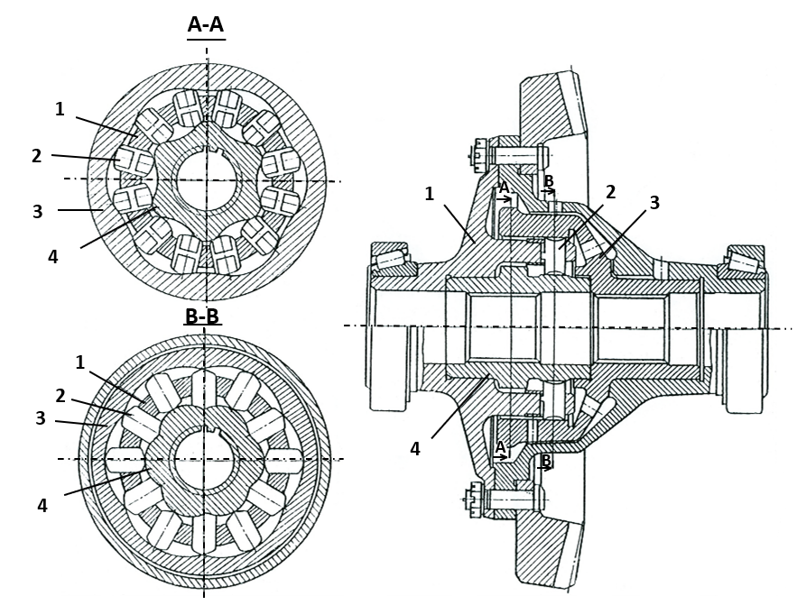
Hình 7.14. Cấu tạo bộ vi sai cam
1- Vòng cách; 2- Cam trượt; 3- Vòng cách ngoài; 4- Vòng cách trong
Nguyên lý hoạt động của bộ vi sai cam hướng kính như sau:
Mô men xoắn trên vỏ vi sai hay từ vòng cách 1 truyền qua các con trượt tới 2 vành cam trong và vành cam ngoài rồi đến các bán trục.
Khi xe chuyển động thẳng hoặc khi sức cản từ mặt đường tác dụng lên hai bánh xe là như nhau: Các con trượt 2 đóng vai trò như các bánh răng vi sai. Chúng giữ cho vòng cách 1, các vành cam trong 4 và vành cam ngoài 3 quay thành một khối. Mô men xoắn được phân bố đều ra hai bên bán trục. Tuy nhiên không phải 24 con trượt cùng truyền mô men mà tại một thời điểm bất kỳ ứng với một chiều quay của vòng cách 1, chỉ những con trượt nào mà hai đầu của nó cùng tiến vào phần lồi của các vấu cam ở vành cam trong và vành cam ngoài thì con trượt đó mới truyền mô men. Vi sai cam có hay dãy và thông thường mỗi dãy có 6 con trượt cùng truyền mô men nên tổng số con trượt cùng làm việc nhiều nhất là 12 con trượt theo một chiều quay của vòng cách.
Khi xe quay vòng hoặc khi lực cản từ mặt đường tác dụng lên hai bánh xe là khác nhau: Hai bán trục có tốc độ quay khác nhau, khi đó giữa vành cam trong 4 và vành cam ngoài 3 có chuyển động quay tương đối với nhau. Các con trượt khi đó ngoài chuyển động quay cùng vòng cách chúng còn dịch chuyển tịnh tiến dọc trục của chúng và trượt trên các bề mặt cam của vành cam trong và vành cam ngoài. Các chuyển động tương đối làm phát sinh lực ma sát giữa hai đầu các con trượt với vành cam trong và vành cam ngoài. Lực ma sát tác dụng lên vành cam quay chậm cùng chiều với lực vòng tác dụng lên nó còn lực ma sát tác dụng lên vành cam quay nhanh ngược chiều với lực vòng tác dụng lên nó. Kết quả là mô men xoắn truyền đến bánh xe quay chậm được tăng lên và ngược lại. Điều này giúp cho xe có thể vượt qua được những chỗ khi mà một bên bánh xe nằm ở vùng đường xấu và một bên bánh xe ở vùng đường tốt.
Khi một bánh xe bị trượt quay: Thời điểm ban đầu có sự chuyển động xoay tương đối giữa vành cam trong và vành cam ngoài. Đến khi đỉnh lồi của vấu cam dãy ngoài hoặc dãy trong của vành cam trong trùng với (phương hướng kính) đỉnh lõm của vấu cam ở vành cam ngoài hoặc ngược lại, khi đó cả dãy con trượt sẽ không truyền mô men và trong trường hợp này chỉ có 6 con trượt của dãy con trượt còn lại truyên mô men tới các bán trục.
Khi tốc độ quay của vỏ vi sai đột ngột bằng không. Trường hợp này xảy ra trong thực tế khi tiến hành phanh trục truyền bằng phanh tay hoặc kê kích bánh xe sau đó lấy tay quay một bánh xe trên cùng một cầu chủ động: Do sức cản từ bánh răng bị động truyền lực chính nên vòng cách 1 không nhận được mô men.Vành cam trong 4 và vành cam ngoài 3 có chuyển động quay tương đối nên xuất hiện sự trượt dọc trục của các con trượt do biên dạng cam. Trên cùng chiều quay kim đồng hồ của vành cam ngoài (hoặc vành cam trong) một dãy 6 con trượt ở trạng thái làm việc của vành cam ngoài (hoặc vành cam trong) bị cản do vòng cách đứng yên. Khi đó 6 con trượt ở trạng thái làm việc của dãy còn lại có xu hướng khắc phục sự cản đó bằng cách tác động cho vành cam trong (hoặc vành cam ngoài) quay ngược chiều kim đồng hồ.
Như vậy trong mọi trường hợp vi sai cam hai dãy đều có khả năng truyền mô men xoắn ra các bán trục vì có hai dãy cam và con trượt bố trí so le với nhau. Vi sai cam cũng có khả năng phân bố mô men xoắn ra các bánh xe chủ động phù hợp với điều kiện chuyển động của bánh xe: khi bánh xe nào có điều kiện bám tốt hơn thì mô men xoắn được truyền đến bánh xe đó lớn hơn và ngược lại. Tính chất này nâng cao khả năng cơ động và tính năng thông qua cho xe.
c. Vi sai có cơ cấu khóa điều khiển được
Khóa vi sai gồm có cơ cấu chuyển đổi và khớp gài. Việc chuyển đổi có thể thực hiện cơ học bằng tay, thủy lực hoặc khí nén. Hiện nay có thể sử dụng cơ cấu khóa vi sai để thực hiện khóa vi sai giữa các bánh xe như trên Hình 7.15 hoặc khóa vi sai giữa các cầu xe Hình 7.16
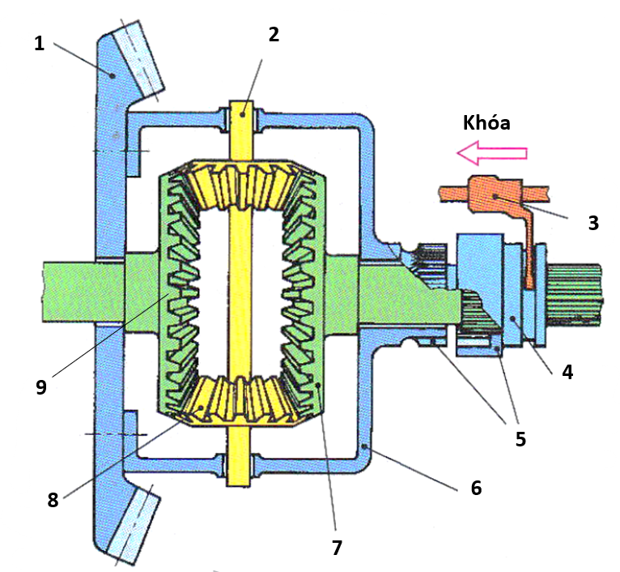
Hình 7.15. Vi sai giữa các bánh xe
1- Bánh răng bị động truyền lực chính; 2- Trục bánh răng vi sai; 3- Cơ cấu gài; 4- Khớp gài; 5- Khớp răng; 6- Vỏ vi sai; 7,9- Bánh răng bán trục; 8- Bánh răng vi sai.
Đặc điểm cấu tạo cơ cấu khóa vi sai giữa các bánh xe sử dụng cơ cấu vi sai bánh răng côn đối xứng như Hình 7.15. Khi vi sai được khoá cứng hai bánh răng bán trục được nối thành một trục cứng, khi đó sẽ cùng quay tốc độ như nhau và tận dụng trọng lượng bám của xe để vượt qua đường có hệ số bám thấp. Vi sai thường được khoá bằng cách nối một trong hai bán trục với vỏ vi sai 6 nhờ khớp răng 5 và khớp gài 4.
Nguyên lý làm việc như sau:
Khi gài cơ cấu khóa vi sai, khớp răng 5 sẽ liên kết bán trục bên phải với vỏ vi sai 6 và bánh răng bị động truyền lực chính 1. Khi đó cả ba chi tiết này sẽ cùng quay một tốc độ như nhau. Một sự liên kết giữa bán trục bên phải và vỏ vi sai thông qua răng trong của khớp gài và răng ngoài phía bên phải của vỏ vi sai. Vì vậy, các bánh răng vi sai không thể quay lăn trên các bánh răng bán trục. Chúng chỉ có tác dụng như bánh dẫn động. Sự cân bằng bị khóa 100 %.
Cơ cấu khóa vi sai phải được tách ra khi độ bám mặt đường của các bánh xe chủ động có trị số bình thường, để tránh hư hỏng cho các bánh răng và khớp răng trên vỏ vi sai với trên ống gài.
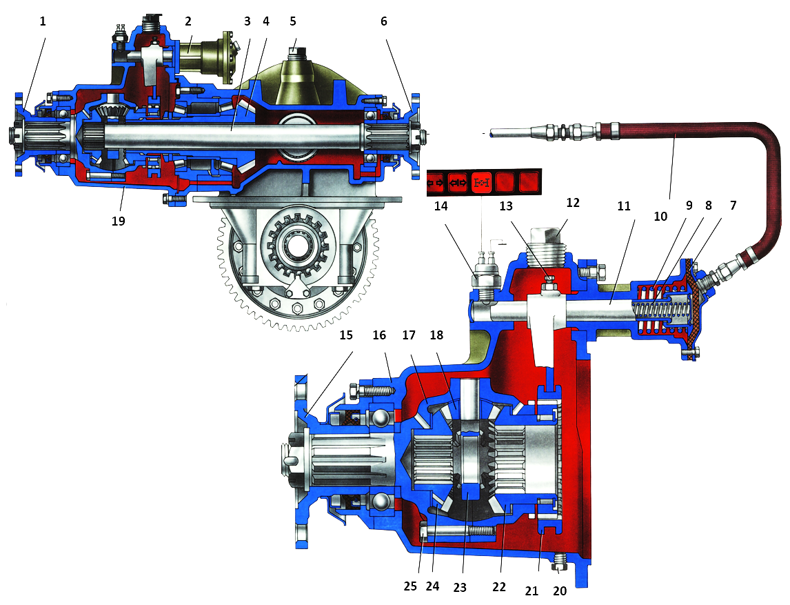
Hình 7.16. Vi sai giữa các cầu xe
1,6,15- Mặt bích; 2- Vỏ xi lanh; 3- Trục truyền ra cầu sau; 4- Bánh răng côn chủ động; 5,12,13,20- Đai ốc; 7- Piston; 8,9- Lò xo; 10- Ống mềm, 11- Thanh trượt; 14- Công tắc cảm biến đóng mạch; 16,19- Vỏ;17- Vỏ vi sai; 18- Bánh răng vi sai; 21- Ống gài; 22,24- Bánh răng mặt trời; 23- Trục bánh răng vi sai (Trục chữ thập); 25- Bu long.
Ngoài việc dùng vi sai bánh răng còn đối xứng làm vi sai giữa các bánh xe, nó còn được dùng làm vi sai giữa các cầu xe. Trên một số ô tô tải KaMaz có bố trí vi sai giữa cầu giữa và cầu sau là vi sai bánh răng côn đối xứng có khớp khoá vi sai. Bộ vi sai này được đặt ở cụm cầu giữa của xe. Đặc điểm cấu tạo của bộ vi sai và phần dẫn động khoá vi sai được thể hiện trên Hình 7.16
Vi sai giữa các cầu xe được lắp ráp trong vỏ 16, 19 và vỏ này được lắp cố định với vỏ truyền lực chính của cầu giữa. Vỏ vi sai 17 có hai phần được lắp ghép cố định với nhau bằng các bu lông. Phần vỏ phía trước (bên trái) có một đoạn trục được chế tạo liền với nó tì lên ổ đỡ. Đầu của đoạn trục này có gia công then hoa để lắp ráp bích 1 và nhờ bích này nối dẫn động từ hộp số chính đến bộ vi sai bởi truyền động các đăng kép. Tại mặt phẳng lắp ráp hai phần của vỏ 17 có đặt chữ thập 23 mà ở các đầu ngõng trục của nó lắp bốn bánh răng vi sai 18. Mỗi bánh răng vi sai đều có đệm tựa. Các bánh răng vi sai đồng thời ăn khớp với hai bánh răng mặt trời 22 và 24 dẫn động cầu giữa và cầu sau.
Các bánh răng mặt trời có kích thước như nhau. Bánh răng 24 dẫn động cầu sau được đặt trong hốc của phần vỏ phía trước của vi sai và có đệm tựa lưng. Các lỗ dẫn đầu được gia công trên vỏ vi sai để bôi trơn cho các bề mặt ma sát này. Moay ơ của bánh răng 24 có gia công then hoa để lắp ghép then hoa cố định với trục dẫn động ra truyền lực chính cầu sau của xe. Bánh răng 22 dẫn động cầu giữa cũng có gia công lỗ then hoa lắp ghép then hoa với phần kéo dài của moay ơ bánh răng côn chủ động của truyền lực chính. Ở đoạn đuôi moay ơ bánh răng mặt trời 22 có gia công vành răng ngoài để ăn khớp với vành răng trong của ống gài 21. Ống gài 21 này có thể di chuyển dọc trục bánh răng 22 để ăn khớp với vành răng trên vỏ vi sai 17 nhằm thực hiện việc khoá vi sai khi cần thiết.
Càng gài gắn trên ống gài được lắp cố định với thanh trượt 11 và thanh này được liên kết với cơ cấu dẫn động khoá vi sai. Vỏ 2 của cơ cấu dẫn động khoá vi sai được kẹp chặt với vỏ ngoài của bộ vi sai giữa các cầu xe. Giữa vỏ 2 và nắp của cơ cấu dẫn động vi sai là màng cao su 7. Khoang bên trái màng đặt thanh trượt 11, nối ghép với cốc mà bên trong nó có lò xo nén 8, bên ngoài cốc là lò xo hồi vị 9. Cần của van điều khiển khoá vi sai được đặt ở bảng các loại đồng hồ trong cabin. Trên bảng này cũng có đèn báo tín hiệu khoá vi sai giữa các cầu xe.
Nguyên lý của cơ cấu khóa vi sai giữa các cầu như sau:
Quá trình làm việc của vi sai giữa các cầu xe này xảy ra tương tự như đối với vi sai bánh răng côn đối xứng giữa các bánh xe. Việc bố trí vi sai giữa các cầu xe làm cho các bánh xe trên các cầu có thể chuyển động quay với vận tốc góc khác nhau do vậy mà tránh được hiện tượng tuần hoàn công suất. Tuy nhiên do vi sai bánh răng côn đối xứng là loại vi sai có ma sát trong nhỏ nên khi các bánh xe của một cầu chủ động hoặc cả hai cầu chủ động nằm ở chỗ đường lầy (đường có khả năng bám kém) thì xe không thể vượt qua được. Trường hợp này phải thực hiện việc khoá vi sai giữa các cầu xe.
Ở vị trí như trên Hình 7.16, vi sai giữa các cầu không được khoá. Để khoá vi sai này, cần của van điều khiển khoá vi sai phải được người lái gạt sang bên phải (khoá vi sai cưỡng bức). Khi đó khí nén từ van điều khiển theo hệ thống dẫn khí và đường ống mềm 10 vào khoang bên phải của màng 7, tạo ra áp lực thắng sức căng của lò xo hồi vị 9 đẩy cốc và thanh trượt 11 về phía trước (sang trái). Khi thanh trượt 11 dịch chuyển, thông qua càng gài đẩy ống gài vào ăn khớp với vành răng trên vỏ vi sai 17. Khi đó bánh răng 22 dẫn động cầu giữa và vỏ 17 của bộ vi sai được khoá cứng với nhau và do vậy bộ vi sai giữa hai cầu được khoá, các bánh răng 22 và 24 dẫn động hai cầu giữa và sau sẽ quay cùng một tốc độ góc. Đồng thời khi thanh trượt 11 dịch chuyển sang trái sẽ đóng công tắc của cảm biến đóng mạch 14 và đèn tín hiệu trong cabin sáng lên báo hiệu bộ vi sai giữa các cầu đã được khoá.
Để nhả khoá vi sai, cần của van điều khiển được gạt sang bên trái. Khi nén trong khoang bên phải của màng 7 theo đường ống dẫn và van điều khiển thải ra ngoài khí trời. Quá trình xảy ra trong dẫn động khoá ngược lại với quá trình khoá vi sai.
Việc khoá vi sai giữa các cầu nhất là khi ô tô chuyển động trên đường có khả năng bám kém sẽ cho phép xe có thể vượt qua được đoạn đường này. Tuy nhiên khi khoá vi sai các bánh xe của một cầu xe hoặc các cầu xe được nối cứng với nhau nên chúng luôn phải quay cùng một tốc độ và sẽ phát sinh những nhược điểm như không đặt vi sai giữa các bánh xe chủ động. Vì vậy đối với các loại xe có cơ cấu gài cưỡng bức vi sai người lái phải tuân theo đúng những quy định và hướng dẫn sử dụng xe.
Nhược điểm của cơ cấu khoá vi sai là không tự động hoá được việc khoá và nhả khoá nên dễ dẫn đến tình trạng khoá và nhả khoá vi sai không đúng lúc do người lái không đánh giá đúng điều kiện hoạt động của xe. Nhưng nhược điểm này có thể khắc phục nếu sử dụng khoá vi sai một cách tự động hoàn toàn hoặc dùng vi sai tự khoá với ma sát trong cao.
Trong thiết kế chế tạo người ta đã tính toán đến việc vi sai có khớp khoá cưỡng bức sẽ không bị quên nhả khoá bởi người lái. Ví dụ hệ thống dẫn động điều khiển khoá vi sai cưỡng bức buộc người lái phải giữ cần điều khiển hoặc ấn nút điều kiển trong suốt quá trình vi sai được khoá. Tuy nhiên biện pháp này sẽ không thuận tiện trong sử dụng xe và vẫn có thể sai lầm khi khoá vi sai không đúng lúc.
d. Vi sai có cơ cấu khóa tự động
Khóa vi sai với ly hợp nhiều đĩa
Đặc điểm cấu tạo của khóa vi sai với ly hợp nhiều đĩa được thể hiện trên Hình 7.17. Ngoài các bộ phận của bộ vi sai bánh răng côn đối xứng, khóa vi sai này còn được bồ sung thêm hai vòng ép 12 và 17 và hai ly hợp nhiều đĩa về hai phía của bánh răng bán trục.
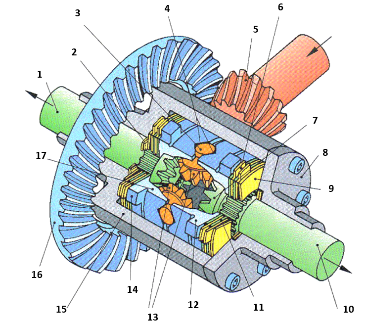
Hình 7.17. Khóa vi sai với ly hợp nhiều đĩa
1,10- Bán trục; 2,9- Lò xo đĩa; 3- Trục bánh răng vi sai; 4- Bề mặt hình nêm; 5- Bánh răng chủ động truyền lực chính; 6- Các đĩa ngoài (không quay được trong vỏ vi sai); 7- Bánh răng bán trục; 8- Nắp; 11- Các đĩa trong (không quay được với bánh răng bán trục); 12,17- Vòng ép; 13- Bánh răng vi sai; 14- Chêm dẫn động; 15- Vỏ vi sai;16- Bánh răng bị động truyền lực chính.
Các vòng ép 12, 17 có các chêm dẫn động 14 trên bề mặt xung quanh ăn khớp với các rãnh dọc trên vỏ vi sai 15. Chúng kết nối chặt không quay được với vỏ vi sai, nhưng có thể chuyển động dọc trục trên vỏ. Các đĩa ngoài 6 và đĩa trong 11 được bố trí giữa mặt trước phía ngoài của vòng ép và mặt trước của vỏ vi sai. Các đĩa có răng ngoài ăn khớp với rãnh dọc trên ỏ vi sai, còn các đĩa có răng trong ăn khớp với răng ngoài của bán trục. Hai đĩa ép có bốn rãnh phay ở mặt trên phía bên trong là chỗ lắp trục các bánh răng côn vi sai. Các lò xo đĩa 2 và 9 được lắp đặt tạo lực ép ban đầu lên các đĩa.
Nguyên lý làm việc của khóa vi sai như sau:
Momen xoắn từ hộp số nhiều cấp được gia tăng bởi tỷ số truyền của bộ truyền lực chính và truyền qua bánh răng bị động truyền lực chính 16 và vỏ vi sai 15 tới các vòng ép 12 và 17.
Khi độ bám mặt đường là tốt như nhau tại cả hai bánh xe trên một cầu: 50% mô men từ vỏ vi sai được truyền tới mỗi bánh xe chủ động. Mô men được truyền qua bánh răng bị động truyền lực chính 16 tới vỏ vi sai và qua các vòng ép 12 và 17 (các vòng này có thể di chuyển dọc trục) tới các ly hợp nhiều đĩa và tới các bán trục.
Khỉ độ bám mặt đường khác nhau tại mỗi bánh xe hoặc khí xe quay vòng: Thí dụ nếu bánh xe chủ động bên phải quay trượt, các bánh răng côn vi sai 13 sẽ quay. Các trục của chúng ép các vòng ép vào hai khối các đĩa ly hợp. Lực ép tạo nên momen ma sát phụ thuộc vào tải trọng giữa các đĩa có răng trong quay nhanh hơn và các đĩa có răng ngoài của khối các đĩa ly hợp bên phải. Momen ma sát này truyền qua vỏ vi sai, khối các đĩa ly hợp bên trái và các răng của bán trục trái tới bánh xe chủ động phía bên trái. Tại đây mô men này tác động thêm vào mô men dẫn động của phía bánh răng bán trục bên phải.
Khóa vi sai Torsen
Nguyên lý cơ bản của vi sai Torsen dựa trên tinh chất tự khóa giữa trục vít và bánh vít trong bộ truyền trục vít. Mức độ tự khóa phụ thuộc vào góc nghiêng răng của trục vít và bánh vít. Sự tự khóa không xảy ra khi trục vít dẫn động bánh vít.
Vi sai Torsen (Torsen = Torque sensing = cảm nhận momen xoắn) phân phối tùy theo mô men xoắn được cung cấp từ hộp số nhiều cấp. Vi sai có thể được dùng như khóa dọc trong bộ vi sai trung tâm để phân phối mô men tới các cầu, thí dụ với phân phối momen đều hoặc không đều như Hình 7.18 (40 % cầu trước và 60 % cầu sau) hoặc như khóa ngang giữa các bánh xe Hình 7.19
Vi sai Torsen bao gồm hai bộ truyền trục vít (trục vít và bánh vít). Các bánh răng trụ 6 liên kết hai bộ truyền trục vít với nhau bằng ăn khớp răng. Chúng lắp quay được trong vỏ vi sai 2. Mỗi trục vít 1 và 5 được liên kết chặt không quay được với mỗi bán trục. Trong trường hợp phân phối momen bằng nhau, các bánh vít 7 có cùng kích thước Hình 7.19; nếu phân phối momen không bằng nhau, các bánh vít có đường kính khác nhau như Hình 7.18.
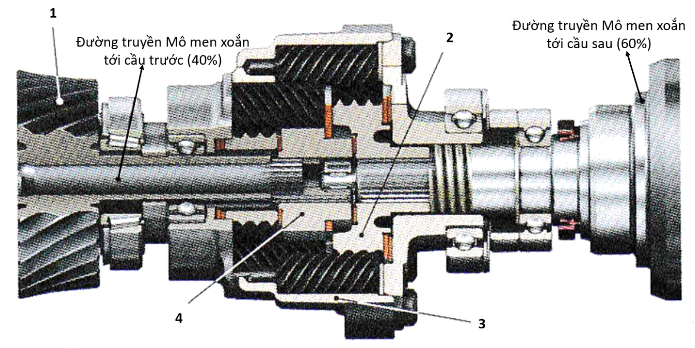
Hình 7.18. Khóa vi sai Torsen giữa các cầu
1- Bánh răng đầu vào; 2- Bánh vít dẫn động lớn; 3- Vỏ vi sai trung tâm; 4- Bánh vít dẫn động nhỏ.
Nguyên lý là việc của khóa vi sai Torsen như sau:
Đường truyền lực trong vi sai Torsen: Mô men dẫn động từ bánh răng bị động truyền lực chính 3 và truyền tới các trục vít 1, 5 của hai bán trục 4 và 8 nhờ vỏ vi sai 2 và các bánh vít 7.
Khi độ bám mặt đường tốt như nhau tại cả hai bánh xe: Khi chạy trên đường thẳng, các bánh xe chủ động quay cùng tốc độ gốc, các bánh vít không quay cùng với các bánh răng trụ phía bên cạnh, và tác dụng như chêm dẫn động. Momen xoắn dược phân phối đồng đều tới hai bán trục.
Khi độ bám mặt đường khác nhau giữa hai bánh xe, khi quay vòng: Việc cân bằng tốc độ góc được thực hiện qua các bánh răng trụ 6 quay và các bánh vít 7, khi đó hiện tượng tự khóa xảy ra. Thí dụ, nếu bánh xe chủ động trái quay nhanh hơn, thì trục vít trái dẫn động bánh vít trái. Bánh răng trụ phía trái truyền chuyển động quay tới bánh răng trụ và bánh vít phía phải. Sự tự khóa tương ứng với trị số khóa xảy ra giữa bánh vít và trục vít. Bánh xe với độ bám đường tốt hơn hoặc tốc độ quay thấp hơn, ở đây là bánh xe phải, sẽ nhận được nhiều mô men hơn.
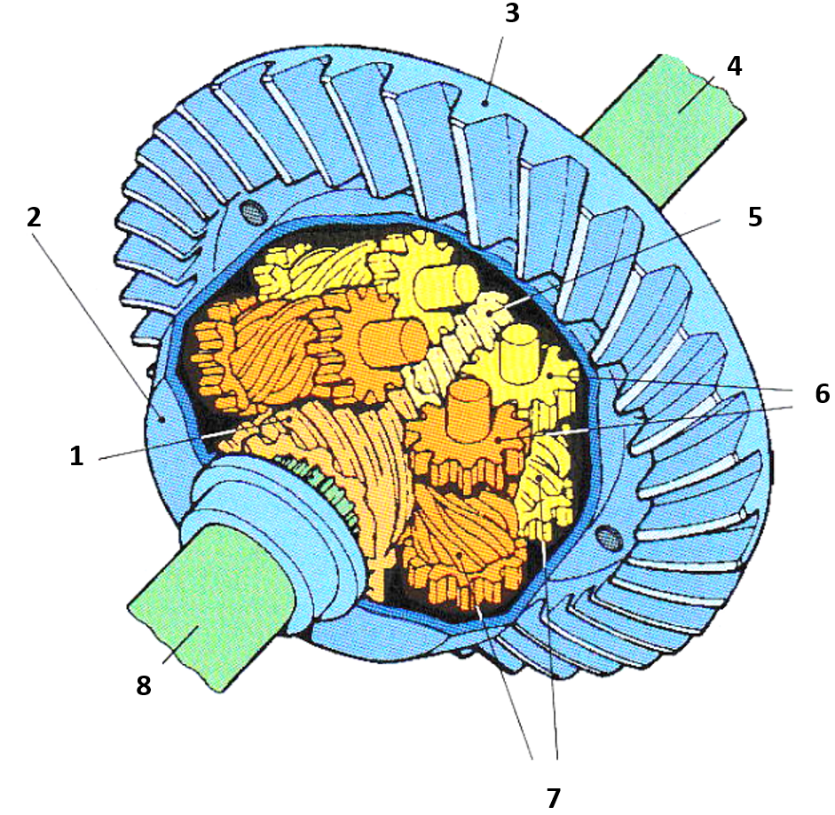
Hình 7.19. Khóa vi sai Torsen giữa các bánh xe
1- Trục vít bên phải; 2- Vỏ vi sai; 3- Vỏ Bánh răng bị động truyền lực chính; 4,8- Bán trục; 5- Trục vít bên trái; 6- Bánh răng trụ; 7- Bánh vít.
Vi sai tự khóa với ly hợp nhiều đĩa tác động bằng điện cơ
Đây là vi sai tự khóa tự động hoàn toàn sử dụng động cơ điện với các bánh răng truyền động để khóa hoàn toàn 100% vi sai tại cầu sau. Đặc điểm cấu tạo được thể hiện trên Hình 7.20 và Hình 7.21 Vỏ phía cầu sau với bộ truyền lực chính bánh răng côn có thêm một số chi tiết như sau: Một ly hợp nhiều đĩa 1 trong vỏ vi sai; một thiết bị tạo áp kiểu cơ học với đế cầu với các chi tiết đối ứng với đế cầu 4, bánh răng với đế cầu 5, đĩa 8 và bi 9; một động cơ điện với bánh răng truyền động để kích hoạt khóa.
Nguyên lý làm việc của vi sai tự khóa thể hiện trên Hình 7.21 như sau:
Nếu một bánh xe chủ động bị trượt quay, động cơ điện 7 được kích hoạt. Nhờ bánh răng truyền động 6, phần bánh răng với đế cầu 5 có gờ với độ dốc quay, khiến cho vòng ép 2 dịch chuyển dọc trục. Vòng ép 2 ép các đĩa bên trong liên kết với bán trục vào các đĩa bên ngoài với vỏ vi sai. Vi sai bị khóa 100 %. Nếu động cơ điện ngừng kích hoạt (không có điện), lò xo 10 đẩy vòng ép trở lại và ly hợp được nhả ra lại.
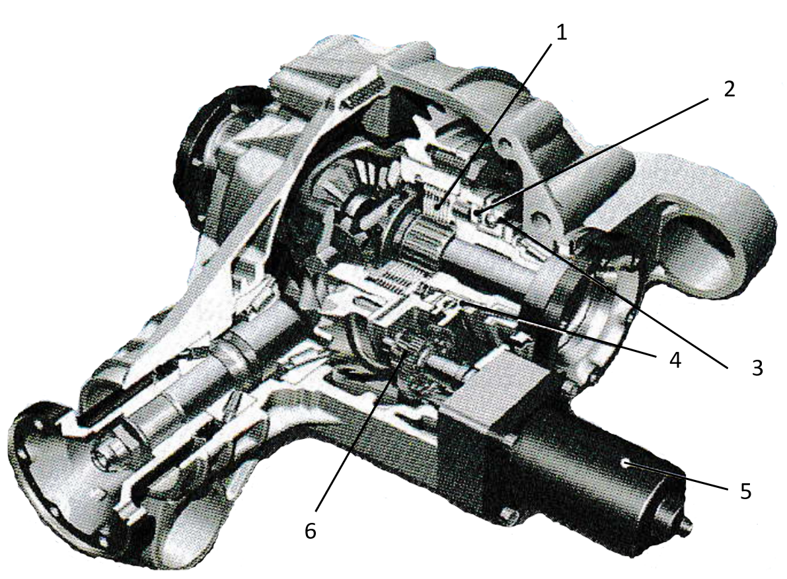
Hình 7.20. Vi sai tự khóa điều khiển bằng điện
1- Ly hợp nhiều đĩa; 2- Vòng ép; 3,4- Đế cầu; 5- Động cơ điện; 6- Bánh răng truyền động.
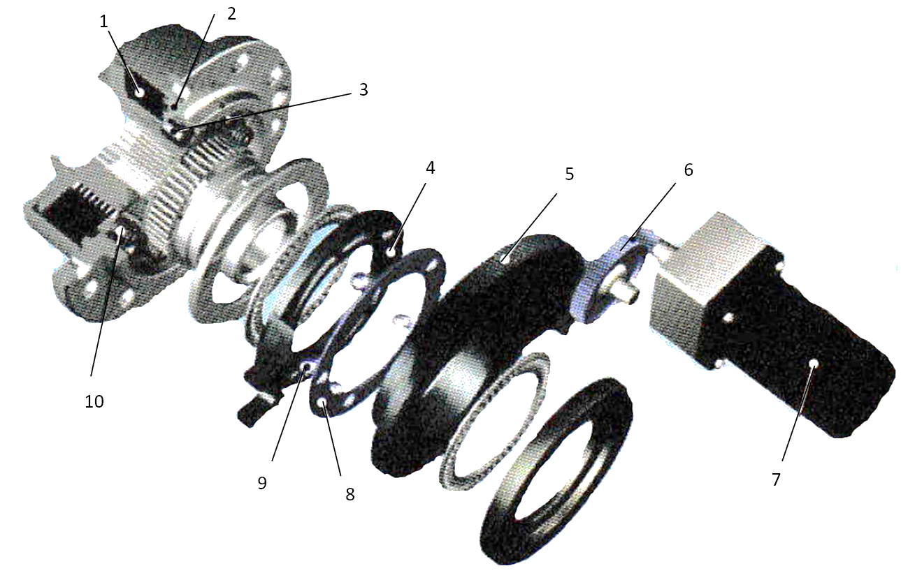
Hình 7.21. Các bộ phận vi sai tự khóa
1- Ly hợp nhiều đĩa; 2- Vòng ép; 3- Chốt ép; 4- Chi tiết đối ứng với đế cầu 5- Bánh răng với đế cầu; 6- Bánh răng truyền động; 7- Động cơ điện; 8- Đĩa; 9- bi; 10- Lò xo.
Vi sai tự khóa chủ động
Đây là vi sai tự khóa hoàn toàn tự động, tùy theo tình trạng xe chạy nó có thể phân phối lực kéo vô cấp và thay đổi được tới từng bánh xe. Đặc điểm cấu tạo được thể hiện trên Hình 7.22. Một số bộ phận sau được tích hợp vào vỏ cầu phía sau cùng với bộ truyền lực chính bánh răng côn: Một bên bán trục có một bộ bánh răng hành tinh phối hợp gồm bánh răng mặt trời 3, 8 và vành răng trong 1, 2. Bộ bánh răng có thể được nối với các ly hợp nhiều đĩa 5 và 7; sử dụng hệ thống điều khiển điện-thủy lực để kích hoạt ly hợp nhiều đĩa.
Bộ vi sai tự khóa này có đặc điểm là lực kéo được cải thiện khi lực bám mặt đường thay đổi (trị số khóa tối đa là 30% tới 40%). Xe ô tô khi di chuyển sẽ có độ ổn định hướng tốt hơn khi quay vòng do khi quay vòng sẽ xuất hiện mô men quay quanh trục thẳng đứng đi qua trọng tâm ô tô.
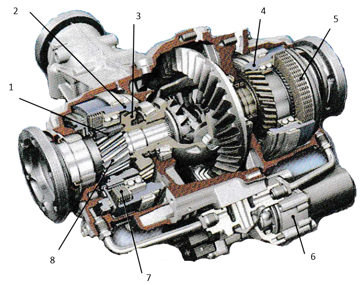
Hình 7.22. Vi sai tự khóa chủ động
1- Vành răng trong số 2; 2- Vành răng trong số 1; 3- Bánh răng mặt trời số 1; 4- Vành răng trong số 1; 5,7- Ly hợp nhiều đĩa; 6- Động cơ điện; 8- Bánh răng mặt trời số 2.
Nguyên lý làm việc của hệ thống vi sai tự khóa tự động được thể hiện trên Hình 7.23 như sau:
Tùy vào tốc độ xe, góc đánh lái và mô men quanh trục thẳng đứng của xe đi qua trọng tâm, các bánh xe chủ động được cung cấp mô men dẫn động khác nhau bằng cách kích hoạt ly hợp nhiều đĩa. Bằng cách này hiệu ứng tự lái của xe có thể được ảnh hưởng có chủ định. Nếu sự gia tăng mô men được mong muốn ở một bánh xe chủ động, ly hợp nhiều đĩa đóng và kết nối bánh răng mặt trời 1 với vành răng trong 1. Thông qua các tỷ số truyền có tác dụng khác nhau (S1 tới H1 sau đó kết nối từ H2 sang S2), sự gia tăng mô men được tạo ra ở bánh xe phía đối diện. Khi đi thẳng, các ly hợp được nhả và mô men dẫn động được phân phối đều tới các bánh xe.
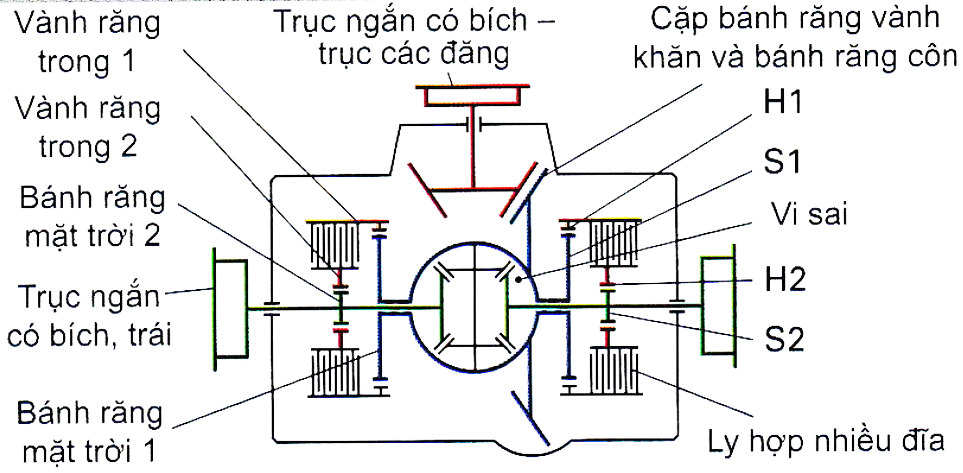
Hình 7.23. Sơ đồ nguyên lý của vi sai tự khóa chủ động
S1- Bánh răng mặt trời 1; S2- Bánh răng mặt trời 2; H1- Vành răng trong 1; H2- Vành răng trong 2.